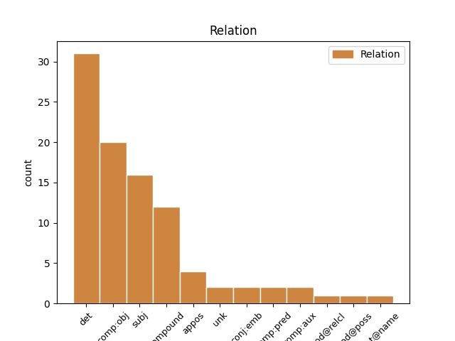
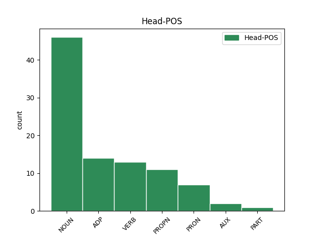
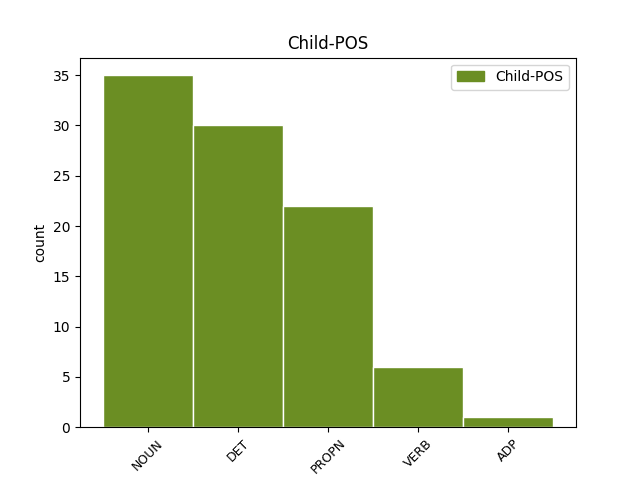

Distribution of features within this leaf



Agreement Rules sorted by frequency.
- When the dependent token is the determiner(det) of the head token, and the head token is NOUN and the dependent token is DET.
1 Pagbabawal _ _ _ _ 0 _ _ _
2 sa _ _ _ _ 0 _ _ _
3 pagluwas _ _ _ _ 0 _ _ _
4 at _ _ _ _ 0 _ _ _
5 pagbenta _ _ _ _ 0 _ _ _
6 na na DET _ Case=Gen|Definite=Def|Gender=Fem|Number=Sing|PronType=Art 7 det _ _
7 may may NOUN _ Case=Gen|Gender=Fem|Number=Sing 0 _ _ _
8 kinalaman _ _ _ _ 0 _ _ _
9 sa _ _ _ _ 0 _ _ _
10 armas _ _ _ _ 0 _ _ _
11 . _ _ _ _ 0 _ _ _
1 Takot _ _ _ _ 0 _ _ _
2 na _ _ _ _ 0 _ _ _
3 takot _ _ _ _ 0 _ _ _
4 , _ _ _ _ 0 _ _ _
5 nakiusap _ _ _ _ 0 _ _ _
6 si _ _ _ _ 0 _ _ _
7 Dely _ _ _ _ 0 _ _ _
8 sa _ _ _ _ 0 _ _ _
9 ama _ _ _ _ 0 _ _ _
10 ni _ _ _ _ 0 _ _ _
11 Noel _ _ _ _ 0 _ _ _
12 na na ADP _ Case=Acc 0 _ _ _
13 kausapin kausapin NOUN _ Animacy=Inan|Case=Acc|Gender=Masc|Number=Sing 12 comp:obj _ _
14 si _ _ _ _ 0 _ _ _
15 Dadong _ _ _ _ 0 _ _ _
16 . _ _ _ _ 0 _ _ _
1 Nanalo _ _ _ _ 0 _ _ _
2 siya _ _ _ _ 0 _ _ _
3 sa _ _ _ _ 0 _ _ _
4 isang _ _ _ _ 0 _ _ _
5 kompetisyon _ _ _ _ 0 _ _ _
6 sa _ _ _ _ 0 _ _ _
7 ABS _ _ _ _ 0 _ _ _
8 - _ _ _ _ 0 _ _ _
9 CBN _ _ _ _ 0 _ _ _
10 na _ _ _ _ 0 _ _ _
11 naging _ _ _ _ 0 _ _ _
12 daan _ _ _ _ 0 _ _ _
13 sa _ _ _ _ 0 _ _ _
14 kaniyang _ _ _ _ 0 _ _ _
15 pagiging pagiging NOUN _ Case=Gen|Gender=Fem|Number=Sing 0 _ _ _
16 sikat sikat NOUN _ Case=Gen|Gender=Masc|Number=Plur 15 compound _ _
17 . _ _ _ _ 0 _ _ _
1 Nagkataong _ _ _ _ 0 _ _ _
2 nasatabing _ _ _ _ 0 _ _ _
3 hospital _ _ _ _ 0 _ _ _
4 ( _ _ _ _ 0 _ _ _
5 Peter _ _ _ _ 0 _ _ _
6 Bent _ _ _ _ 0 _ _ _
7 Brigham Brigham PROPN _ Case=NomAcc|Gender=Masc|Number=Sing 8 compound _ _
8 Hospital Hospital PROPN _ Case=NomAcc|Gender=Masc|Number=Sing 0 _ _ _
9 ) _ _ _ _ 0 _ _ _
10 and _ _ _ _ 0 _ _ _
11 dalubhasa _ _ _ _ 0 _ _ _
12 sa _ _ _ _ 0 _ _ _
13 rennin _ _ _ _ 0 _ _ _
14 na _ _ _ _ 0 _ _ _
15 si _ _ _ _ 0 _ _ _
16 Dr _ _ _ _ 0 _ _ _
17 . _ _ _ _ 0 _ _ _
1 Nagkataong _ _ _ _ 0 _ _ _
2 nasatabing _ _ _ _ 0 _ _ _
3 hospital hospital NOUN _ Case=NomAcc|Gender=Masc|Number=Sing 0 _ _ _
4 ( _ _ _ _ 0 _ _ _
5 Peter _ _ _ _ 0 _ _ _
6 Bent _ _ _ _ 0 _ _ _
7 Brigham _ _ _ _ 0 _ _ _
8 Hospital Hospital PROPN _ Case=NomAcc|Gender=Masc|Number=Sing 3 appos _ _
9 ) _ _ _ _ 0 _ _ _
10 and _ _ _ _ 0 _ _ _
11 dalubhasa _ _ _ _ 0 _ _ _
12 sa _ _ _ _ 0 _ _ _
13 rennin _ _ _ _ 0 _ _ _
14 na _ _ _ _ 0 _ _ _
15 si _ _ _ _ 0 _ _ _
16 Dr _ _ _ _ 0 _ _ _
17 . _ _ _ _ 0 _ _ _
1 Hindi _ _ _ _ 0 _ _ _
2 man _ _ _ _ 0 _ _ _
3 siya siya PRON _ Case=Nom|Gender=Masc|Number=Sing|Person=3|PronType=Prs 0 _ _ _
4 ang _ _ _ _ 0 _ _ _
5 bida bida NOUN _ Case=Nom|Gender=Fem|Number=Sing 3 subj _ _
6 o _ _ _ _ 0 _ _ _
7 pangunahing _ _ _ _ 0 _ _ _
8 kntra _ _ _ _ 0 _ _ _
9 - _ _ _ _ 0 _ _ _
10 bida _ _ _ _ 0 _ _ _
11 , _ _ _ _ 0 _ _ _
12 nabigyang _ _ _ _ 0 _ _ _
13 pansin _ _ _ _ 0 _ _ _
14 ang _ _ _ _ 0 _ _ _
15 kanyang _ _ _ _ 0 _ _ _
16 pag _ _ _ _ 0 _ _ _
17 - _ _ _ _ 0 _ _ _
18 arte _ _ _ _ 0 _ _ _
19 at _ _ _ _ 0 _ _ _
20 unti _ _ _ _ 0 _ _ _
21 unti _ _ _ _ 0 _ _ _
22 na _ _ _ _ 0 _ _ _
23 ring _ _ _ _ 0 _ _ _
24 nakikilala _ _ _ _ 0 _ _ _
25 . _ _ _ _ 0 _ _ _
1 Pangyayari pangyayari PROPN _ Animacy=Anim|Case=Nom|Gender=Masc|Number=Sing 0 _ _ _
2 * _ _ _ _ 0 _ _ _
3 62 _ _ _ _ 0 _ _ _
4 – _ _ _ _ 0 _ _ _
5 Lindol lindol PROPN _ Animacy=Anim|Case=Nom|Gender=Masc|Number=Sing 1 unk _ _
6 sa _ _ _ _ 0 _ _ _
7 Pompeii _ _ _ _ 0 _ _ _
8 , _ _ _ _ 0 _ _ _
9 Italy _ _ _ _ 0 _ _ _
10 . _ _ _ _ 0 _ _ _
1 Isa isa NOUN _ Case=Nom|Number=Sing|Person=3 0 _ _ _
2 rin _ _ _ _ 0 _ _ _
3 siyang _ _ _ _ 0 _ _ _
4 manunulat manunulat NOUN _ Case=Nom|Number=Sing|Person=3 1 comp:obj _ _
5 na _ _ _ _ 0 _ _ _
6 prolipiko _ _ _ _ 0 _ _ _
7 . _ _ _ _ 0 _ _ _
1 Magkasamang _ _ _ _ 0 _ _ _
2 ipinalabas _ _ _ _ 0 _ _ _
3 nina _ _ _ _ 0 _ _ _
4 Tassilo _ _ _ _ 0 _ _ _
5 von _ _ _ _ 0 _ _ _
6 Heydebrand _ _ _ _ 0 _ _ _
7 und _ _ _ _ 0 _ _ _
8 der _ _ _ _ 0 _ _ _
9 Lasa _ _ _ _ 0 _ _ _
10 at _ _ _ _ 0 _ _ _
11 Paul _ _ _ _ 0 _ _ _
12 Rudolf _ _ _ _ 0 _ _ _
13 von _ _ _ _ 0 _ _ _
14 Bilguer _ _ _ _ 0 _ _ _
15 ang _ _ _ _ 0 _ _ _
16 Handbuch _ _ _ _ 0 _ _ _
17 des der DET _ Case=Gen|Definite=Def|Gender=Neut|Number=Sing|PronType=Art 18 det _ _
18 Schachspiels Schachspiel PROPN _ Case=Gen|Gender=Neut|Number=Sing 0 _ _ _
19 ( _ _ _ _ 0 _ _ _
20 Libreto _ _ _ _ 0 _ _ _
21 ng _ _ _ _ 0 _ _ _
22 Ahedres _ _ _ _ 0 _ _ _
23 ) _ _ _ _ 0 _ _ _
24 , _ _ _ _ 0 _ _ _
25 ang _ _ _ _ 0 _ _ _
26 kauna _ _ _ _ 0 _ _ _
27 - _ _ _ _ 0 _ _ _
28 unahang _ _ _ _ 0 _ _ _
29 detalyadong _ _ _ _ 0 _ _ _
30 manwal _ _ _ _ 0 _ _ _
31 ng _ _ _ _ 0 _ _ _
32 pag _ _ _ _ 0 _ _ _
33 - _ _ _ _ 0 _ _ _
34 aaral _ _ _ _ 0 _ _ _
35 ng _ _ _ _ 0 _ _ _
36 ahedres _ _ _ _ 0 _ _ _
37 . _ _ _ _ 0 _ _ _
1 Parehas parehas PROPN _ Case=Nom|Gender=Masc|Number=Sing 2 subj _ _
2 sila sila NOUN _ Case=Nom|Gender=Fem|Number=Sing 0 _ _ _
3 na _ _ _ _ 0 _ _ _
4 naniniwala _ _ _ _ 0 _ _ _
5 sa _ _ _ _ 0 _ _ _
6 futbol _ _ _ _ 0 _ _ _
7 na _ _ _ _ 0 _ _ _
8 nakatutok _ _ _ _ 0 _ _ _
9 sa _ _ _ _ 0 _ _ _
10 pagatake _ _ _ _ 0 _ _ _
11 . _ _ _ _ 0 _ _ _
1 Naisip _ _ _ _ 0 _ _ _
2 nilang nilang VERB _ Case=NomAcc|Gender=Masc|Number=Sing 0 _ _ _
3 pumusta pumust NOUN _ Case=NomAcc|Gender=Masc|Number=Sing 2 comp:obj _ _
4 sa _ _ _ _ 0 _ _ _
5 sususnod _ _ _ _ 0 _ _ _
6 na _ _ _ _ 0 _ _ _
7 laban _ _ _ _ 0 _ _ _
8 . _ _ _ _ 0 _ _ _
1 Sa _ _ _ _ 0 _ _ _
2 pagtatangkang _ _ _ _ 0 _ _ _
3 ito _ _ _ _ 0 _ _ _
4 , _ _ _ _ 0 _ _ _
5 nagkaroon nagkaroon VERB _ Case=Nom|Number=Sing|PronType=Tot 0 _ _ _
6 ng _ _ _ _ 0 _ _ _
7 usapin _ _ _ _ 0 _ _ _
8 ang _ _ _ _ 0 _ _ _
9 mga mga NOUN _ Case=Nom|Number=Plur|Person=3|PronType=Prs 5 subj _ _
10 taga _ _ _ _ 0 _ _ _
11 Carmona _ _ _ _ 0 _ _ _
12 laban _ _ _ _ 0 _ _ _
13 sa _ _ _ _ 0 _ _ _
14 mga _ _ _ _ 0 _ _ _
15 Yaptinchay _ _ _ _ 0 _ _ _
16 hanggang _ _ _ _ 0 _ _ _
17 ito _ _ _ _ 0 _ _ _
18 ay _ _ _ _ 0 _ _ _
19 umabot _ _ _ _ 0 _ _ _
20 sa _ _ _ _ 0 _ _ _
21 Pangulong _ _ _ _ 0 _ _ _
22 Manuel _ _ _ _ 0 _ _ _
23 L. _ _ _ _ 0 _ _ _
24 Quezon _ _ _ _ 0 _ _ _
25 sa _ _ _ _ 0 _ _ _
26 Malakanyang _ _ _ _ 0 _ _ _
27 . _ _ _ _ 0 _ _ _
1 Umalis _ _ _ _ 0 _ _ _
2 si _ _ _ _ 0 _ _ _
3 Padre _ _ _ _ 0 _ _ _
4 Salvi _ _ _ _ 0 _ _ _
5 Mula _ _ _ _ 0 _ _ _
6 sa _ _ _ _ 0 _ _ _
7 kaniyang kaniya NOUN _ Case=Gen|Gender=Fem|Number=Sing 8 det _ _
8 pinagtataguan pinagtataguan NOUN _ Case=Gen|Gender=Fem|Number=Sing 0 _ _ _
9 sa _ _ _ _ 0 _ _ _
10 may _ _ _ _ 0 _ _ _
11 haligi _ _ _ _ 0 _ _ _
12 . _ _ _ _ 0 _ _ _
1 Ang _ _ _ _ 0 _ _ _
2 alinmang alinmang NOUN _ Case=NomAcc|Gender=Masc|Number=Sing 0 _ _ _
3 buwan _ _ _ _ 0 _ _ _
4 na _ _ _ _ 0 _ _ _
5 nagsisimula agsisimula VERB _ Case=NomAcc|Form=Ecl|Gender=Fem|Number=Sing 2 mod@relcl _ _
6 sa _ _ _ _ 0 _ _ _
7 Linggo _ _ _ _ 0 _ _ _
8 ay _ _ _ _ 0 _ _ _
9 mayroong _ _ _ _ 0 _ _ _
10 Biyernes _ _ _ _ 0 _ _ _
11 sa _ _ _ _ 0 _ _ _
12 ika-13 _ _ _ _ 0 _ _ _
13 araw _ _ _ _ 0 _ _ _
14 . _ _ _ _ 0 _ _ _
1 Ayon _ _ _ _ 0 _ _ _
2 kay _ _ _ _ 0 _ _ _
3 Marra Marra PROPN _ Case=Nom|Number=Sing|Person=3 0 _ _ _
4 PL PL NOUN _ Case=Nom|Number=Sing|Person=3 3 compound _ _
5 . _ _ _ _ 0 _ _ _
1 Ayon _ _ _ _ 0 _ _ _
2 sa _ _ _ _ 0 _ _ _
3 kanilang kanilang DET _ Case=NomAcc|Form=Ecl|Gender=Masc|Number=Sing 4 det _ _
4 tagapagsalita tagapagsalita VERB _ Case=NomAcc|Form=Len|Gender=Fem|Number=Sing 0 _ _ _
5 na _ _ _ _ 0 _ _ _
6 si _ _ _ _ 0 _ _ _
7 Col _ _ _ _ 0 _ _ _
8 . _ _ _ _ 0 _ _ _
1 Bagamat _ _ _ _ 0 _ _ _
2 nalunasan _ _ _ _ 0 _ _ _
3 ito _ _ _ _ 0 _ _ _
4 agad _ _ _ _ 0 _ _ _
5 , _ _ _ _ 0 _ _ _
6 natigil _ _ _ _ 0 _ _ _
7 ang ang AUX _ Case=Nom|Degree=Pos|Gender=Neut|Number=Sing|Strength=Strong 0 _ _ _
8 paglabas paglabas VERB _ Case=Nom|Gender=Masc|Number=Sing 7 comp:aux _ _
9 sa _ _ _ _ 0 _ _ _
10 telebisyon _ _ _ _ 0 _ _ _
11 na _ _ _ _ 0 _ _ _
12 kung _ _ _ _ 0 _ _ _
13 saan _ _ _ _ 0 _ _ _
14 magiging _ _ _ _ 0 _ _ _
15 panauhin _ _ _ _ 0 _ _ _
16 siya _ _ _ _ 0 _ _ _
17 sana _ _ _ _ 0 _ _ _
18 sa _ _ _ _ 0 _ _ _
19 komedyang _ _ _ _ 0 _ _ _
20 programang _ _ _ _ 0 _ _ _
21 " _ _ _ _ 0 _ _ _
22 Waratte _ _ _ _ 0 _ _ _
23 ii _ _ _ _ 0 _ _ _
24 te _ _ _ _ 0 _ _ _
25 mo _ _ _ _ 0 _ _ _
26 " _ _ _ _ 0 _ _ _
27 . _ _ _ _ 0 _ _ _
1 Hinango _ _ _ _ 0 _ _ _
2 ang _ _ _ _ 0 _ _ _
3 salitang _ _ _ _ 0 _ _ _
4 sistema _ _ _ _ 0 _ _ _
5 mula _ _ _ _ 0 _ _ _
6 sa _ _ _ _ 0 _ _ _
7 Lating _ _ _ _ 0 _ _ _
8 systēma _ _ _ _ 0 _ _ _
9 , _ _ _ _ 0 _ _ _
10 at _ _ _ _ 0 _ _ _
11 sa _ _ _ _ 0 _ _ _
12 Griyegong _ _ _ _ 0 _ _ _
13 σύστημα σύστημα NOUN _ Case=Nom|Gender=Neut|Number=Sing 0 _ _ _
14 ( _ _ _ _ 0 _ _ _
15 systēma systēma NOUN _ Case=Nom|Gender=Fem|Number=Sing 13 appos _ _
16 ) _ _ _ _ 0 _ _ _
17 . _ _ _ _ 0 _ _ _
1 Inakala _ _ _ _ 0 _ _ _
2 ni _ _ _ _ 0 _ _ _
3 Minggan _ _ _ _ 0 _ _ _
4 na na ADP _ Case=Acc 0 _ _ _
5 umaga _ _ _ _ 0 _ _ _
6 na na ADP _ Case=Acc 4 comp:obj _ _
7 . _ _ _ _ 0 _ _ _
1 Itinaguyod _ _ _ _ 0 _ _ _
2 siya siya PRON _ Case=Nom|Number=Sing|Person=3|PronType=Prs 0 _ _ _
3 ni _ _ _ _ 0 _ _ _
4 Reyna reyna PROPN _ Case=Nom|Number=Sing|Person=3 2 subj _ _
5 Victoria _ _ _ _ 0 _ _ _
6 at _ _ _ _ 0 _ _ _
7 tinulungan _ _ _ _ 0 _ _ _
8 ni _ _ _ _ 0 _ _ _
9 Sidney _ _ _ _ 0 _ _ _
10 Herbert _ _ _ _ 0 _ _ _
11 . _ _ _ _ 0 _ _ _
1 Mula _ _ _ _ 0 _ _ _
2 1952–1956 _ _ _ _ 0 _ _ _
3 , _ _ _ _ 0 _ _ _
4 lumabasa lumabasa VERB _ Case=Nom|Degree=Pos|Gender=Fem|Number=Sing 5 comp:pred _ _
5 siya siya PRON _ Case=Nom|Gender=Fem|Number=Sing|Person=3|PronType=Prs 0 _ _ _
6 sa _ _ _ _ 0 _ _ _
7 17 _ _ _ _ 0 _ _ _
8 na _ _ _ _ 0 _ _ _
9 pelikula _ _ _ _ 0 _ _ _
10 . _ _ _ _ 0 _ _ _
1 Nalibing _ _ _ _ 0 _ _ _
2 si _ _ _ _ 0 _ _ _
3 Ana ana PROPN _ Case=Nom|Gender=Fem|Number=Sing 5 subj _ _
4 sa _ _ _ _ 0 _ _ _
5 mahirap mahirap VERB _ Animacy=Inan|Case=Nom|Gender=Masc|Number=Sing 0 _ _ _
6 na _ _ _ _ 0 _ _ _
7 mahanap _ _ _ _ 0 _ _ _
8 na _ _ _ _ 0 _ _ _
9 libingan _ _ _ _ 0 _ _ _
10 sa _ _ _ _ 0 _ _ _
11 Westminister _ _ _ _ 0 _ _ _
12 Abbey _ _ _ _ 0 _ _ _
13 . _ _ _ _ 0 _ _ _
1 Sa _ _ _ _ 0 _ _ _
2 panahong _ _ _ _ 0 _ _ _
3 ito _ _ _ _ 0 _ _ _
4 naipasa _ _ _ _ 0 _ _ _
5 ang _ _ _ _ 0 _ _ _
6 Batas _ _ _ _ 0 _ _ _
7 Jones _ _ _ _ 0 _ _ _
8 ( _ _ _ _ 0 _ _ _
9 Jones _ _ _ _ 0 _ _ _
10 Act _ _ _ _ 0 _ _ _
11 ) _ _ _ _ 0 _ _ _
12 , _ _ _ _ 0 _ _ _
13 nagtatanggal nagtatanggal VERB _ Case=NomAcc|Form=Ecl|Gender=Fem|Number=Sing 0 _ _ _
14 sa _ _ _ _ 0 _ _ _
15 Komisyon _ _ _ _ 0 _ _ _
16 sa _ _ _ _ 0 _ _ _
17 Pilipinas _ _ _ _ 0 _ _ _
18 ng _ _ _ _ 0 _ _ _
19 Estados _ _ _ _ 0 _ _ _
20 Unidos _ _ _ _ 0 _ _ _
21 at _ _ _ _ 0 _ _ _
22 nagbibigay nagbibigay VERB _ Case=NomAcc|Form=Ecl|Gender=Fem|Number=Sing 13 conj:emb _ _
23 ng _ _ _ _ 0 _ _ _
24 mas _ _ _ _ 0 _ _ _
25 mataas _ _ _ _ 0 _ _ _
26 na _ _ _ _ 0 _ _ _
27 antas _ _ _ _ 0 _ _ _
28 ng _ _ _ _ 0 _ _ _
29 pamamahala _ _ _ _ 0 _ _ _
30 sa _ _ _ _ 0 _ _ _
31 mga _ _ _ _ 0 _ _ _
32 Pilipino _ _ _ _ 0 _ _ _
33 . _ _ _ _ 0 _ _ _
1 Si _ _ _ _ 0 _ _ _
2 Chris Chris PROPN _ Case=NomAcc|Gender=Masc|Number=Sing 0 _ _ _
3 Culliver Culliver PROPN _ Case=NomAcc|Gender=Masc|Number=Sing 2 flat@name _ _
4 ay _ _ _ _ 0 _ _ _
5 ay _ _ _ _ 0 _ _ _
6 may _ _ _ _ 0 _ _ _
7 taas _ _ _ _ 0 _ _ _
8 na _ _ _ _ 0 _ _ _
9 6 _ _ _ _ 0 _ _ _
10 feet _ _ _ _ 0 _ _ _
11 at _ _ _ _ 0 _ _ _
12 1 _ _ _ _ 0 _ _ _
13 inch _ _ _ _ 0 _ _ _
14 . _ _ _ _ 0 _ _ _
1 Siya _ _ _ _ 0 _ _ _
2 ang _ _ _ _ 0 _ _ _
3 ama _ _ _ _ 0 _ _ _
4 ni _ _ _ _ 0 _ _ _
5 Leah Leah PROPN _ Case=Nom|Number=Sing|Person=3 0 _ _ _
6 at _ _ _ _ 0 _ _ _
7 Rachel Rachel PROPN _ Case=Nom|Number=Sing|Person=3 5 conj:emb _ _
8 . _ _ _ _ 0 _ _ _
1 Siya _ _ _ _ 0 _ _ _
2 ay _ _ _ _ 0 _ _ _
3 Miss miss PROPN _ Case=Nom|Number=Sing|Person=3 6 comp:obj _ _
4 Germany _ _ _ _ 0 _ _ _
5 2010 _ _ _ _ 0 _ _ _
6 noon noon ADP _ Case=Nom|Number=Sing|Person=3 0 _ _ _
7 . _ _ _ _ 0 _ _ _
1 Wagamama wagamama NOUN _ Case=Nom|Gender=Fem|Number=Sing 8 subj _ _
2 Fearī _ _ _ _ 0 _ _ _
3 Mirumo _ _ _ _ 0 _ _ _
4 de _ _ _ _ 0 _ _ _
5 Pon _ _ _ _ 0 _ _ _
6 ! _ _ _ _ 0 _ _ _
7 ) _ _ _ _ 0 _ _ _
8 base base NOUN _ Case=Nom|Gender=Fem|Number=Sing 0 _ _ _
9 sa _ _ _ _ 0 _ _ _
10 manga _ _ _ _ 0 _ _ _
11 Hiromu _ _ _ _ 0 _ _ _
12 Shinozuka _ _ _ _ 0 _ _ _
13 ng _ _ _ _ 0 _ _ _
14 Shogakukan _ _ _ _ 0 _ _ _
15 Ciao _ _ _ _ 0 _ _ _
16 magasin _ _ _ _ 0 _ _ _
17 . _ _ _ _ 0 _ _ _
Disagree Examples:
1 Ang _ _ _ _ 0 _ _ _
2 alinmang _ _ _ _ 0 _ _ _
3 buwan _ _ _ _ 0 _ _ _
4 na na DET _ Case=Gen|Definite=Def|Gender=Fem|Number=Sing|PronType=Art 5 det _ _
5 nagsisimula agsisimula VERB _ Case=NomAcc|Form=Ecl|Gender=Fem|Number=Sing 0 _ _ _
6 sa _ _ _ _ 0 _ _ _
7 Linggo _ _ _ _ 0 _ _ _
8 ay _ _ _ _ 0 _ _ _
9 mayroong _ _ _ _ 0 _ _ _
10 Biyernes _ _ _ _ 0 _ _ _
11 sa _ _ _ _ 0 _ _ _
12 ika-13 _ _ _ _ 0 _ _ _
13 araw _ _ _ _ 0 _ _ _
14 . _ _ _ _ 0 _ _ _
1 Ang _ _ _ _ 0 _ _ _
2 Lady _ _ _ _ 0 _ _ _
3 Godiva _ _ _ _ 0 _ _ _
4 ( _ _ _ _ 0 _ _ _
5 1877 _ _ _ _ 0 _ _ _
6 ) _ _ _ _ 0 _ _ _
7 na na ADP _ Case=Loc 0 _ _ _
8 ipininta ipinint NOUN _ Animacy=Anim|Case=Acc|Gender=Masc|Number=Sing 7 comp:obj _ _
9 ni _ _ _ _ 0 _ _ _
10 William _ _ _ _ 0 _ _ _
11 Holmes _ _ _ _ 0 _ _ _
12 Sullivan _ _ _ _ 0 _ _ _
13 ( _ _ _ _ 0 _ _ _
14 1836 _ _ _ _ 0 _ _ _
15 - _ _ _ _ 0 _ _ _
16 1908 _ _ _ _ 0 _ _ _
17 ) _ _ _ _ 0 _ _ _
18 . _ _ _ _ 0 _ _ _
1 Ang _ _ _ _ 0 _ _ _
2 pinakamalapit _ _ _ _ 0 _ _ _
3 na na DET _ Case=Gen|Definite=Def|Gender=Fem|Number=Sing|PronType=Art 4 det _ _
4 nayon nayon NOUN _ Case=Nom|Number=Sing 0 _ _ _
5 ay _ _ _ _ 0 _ _ _
6 Univere _ _ _ _ 0 _ _ _
7 sa _ _ _ _ 0 _ _ _
8 kanluran _ _ _ _ 0 _ _ _
9 , _ _ _ _ 0 _ _ _
10 Polli _ _ _ _ 0 _ _ _
11 at _ _ _ _ 0 _ _ _
12 Karksi _ _ _ _ 0 _ _ _
13 sa _ _ _ _ 0 _ _ _
14 hilaga _ _ _ _ 0 _ _ _
15 , _ _ _ _ 0 _ _ _
16 at _ _ _ _ 0 _ _ _
17 Kõvaküla _ _ _ _ 0 _ _ _
18 sa _ _ _ _ 0 _ _ _
19 timog _ _ _ _ 0 _ _ _
20 . _ _ _ _ 0 _ _ _
1 Ang _ _ _ _ 0 _ _ _
2 “ _ _ _ _ 0 _ _ _
3 v _ _ _ _ 0 _ _ _
4 ” _ _ _ _ 0 _ _ _
5 sa _ _ _ _ 0 _ _ _
6 mga mga DET _ Case=NomAcc|Form=Ecl|Gender=Masc|Number=Sing 7 det _ _
7 wika wika NOUN _ Case=Acc|Gender=Neut|Number=Plur 0 _ _ _
8 sa _ _ _ _ 0 _ _ _
9 Pilipinas _ _ _ _ 0 _ _ _
10 ay _ _ _ _ 0 _ _ _
11 iba _ _ _ _ 0 _ _ _
12 sa _ _ _ _ 0 _ _ _
13 “ _ _ _ _ 0 _ _ _
14 v _ _ _ _ 0 _ _ _
15 ” _ _ _ _ 0 _ _ _
16 ng _ _ _ _ 0 _ _ _
17 Ingles _ _ _ _ 0 _ _ _
18 . _ _ _ _ 0 _ _ _
1 Bukod _ _ _ _ 0 _ _ _
2 sa _ _ _ _ 0 _ _ _
3 kanyang _ _ _ _ 0 _ _ _
4 ekwentro _ _ _ _ 0 _ _ _
5 sa _ _ _ _ 0 _ _ _
6 pang _ _ _ _ 0 _ _ _
7 - _ _ _ _ 0 _ _ _
8 aalipin _ _ _ _ 0 _ _ _
9 sa _ _ _ _ 0 _ _ _
10 Brazil _ _ _ _ 0 _ _ _
11 , _ _ _ _ 0 _ _ _
12 naging nagi VERB _ Animacy=Inan|Case=Loc|Degree=Pos|Gender=Masc|Number=Sing 0 _ _ _
13 palaisipan _ _ _ _ 0 _ _ _
14 rin _ _ _ _ 0 _ _ _
15 kay _ _ _ _ 0 _ _ _
16 Darwin _ _ _ _ 0 _ _ _
17 ang _ _ _ _ 0 _ _ _
18 mga mga DET _ Case=Nom|Number=Plur|Person=3|PronType=Prs 12 subj _ _
19 " _ _ _ _ 0 _ _ _
20 mababangis _ _ _ _ 0 _ _ _
21 na _ _ _ _ 0 _ _ _
22 lahi _ _ _ _ 0 _ _ _
23 " _ _ _ _ 0 _ _ _
24 na _ _ _ _ 0 _ _ _
25 kanyang _ _ _ _ 0 _ _ _
26 nakita _ _ _ _ 0 _ _ _
27 sa _ _ _ _ 0 _ _ _
28 Tierra _ _ _ _ 0 _ _ _
29 del _ _ _ _ 0 _ _ _
30 Fuego _ _ _ _ 0 _ _ _
31 sa _ _ _ _ 0 _ _ _
32 Timog _ _ _ _ 0 _ _ _
33 Amerika _ _ _ _ 0 _ _ _
34 . _ _ _ _ 0 _ _ _